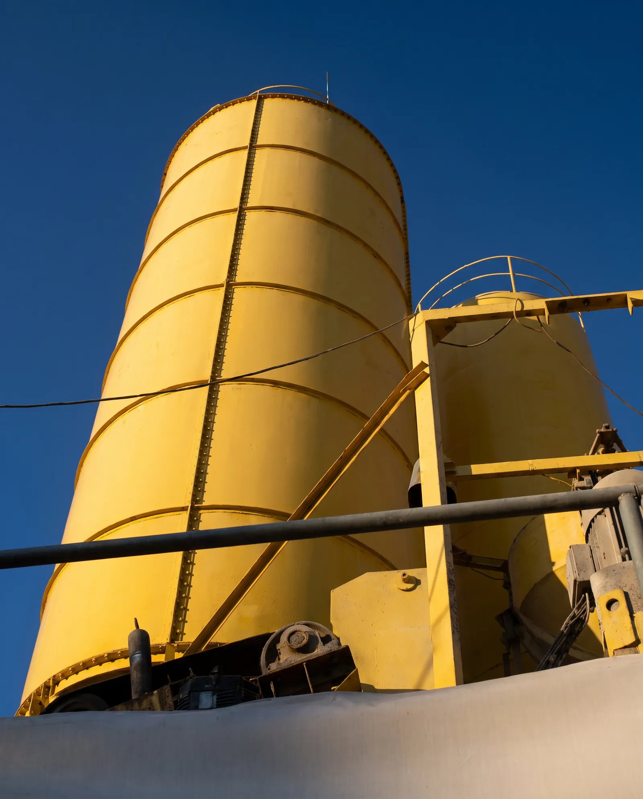
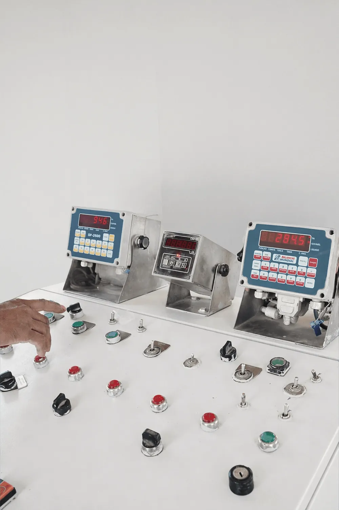
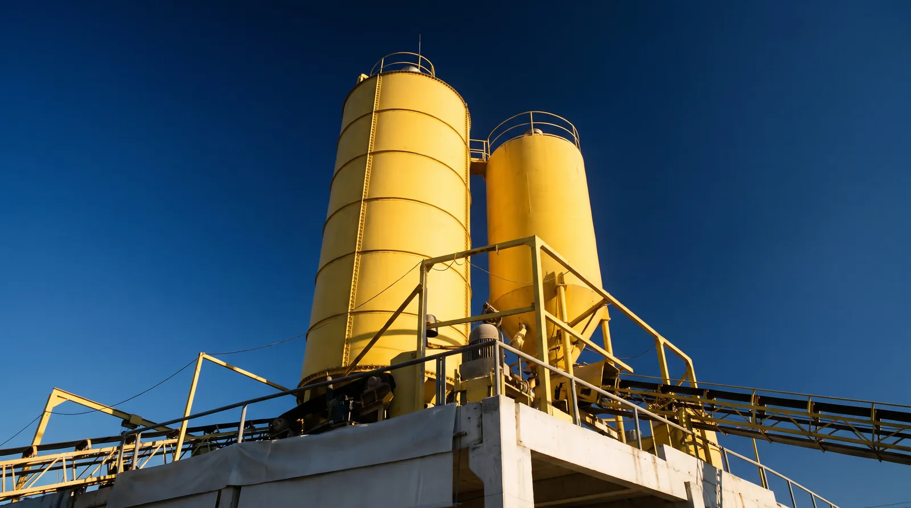
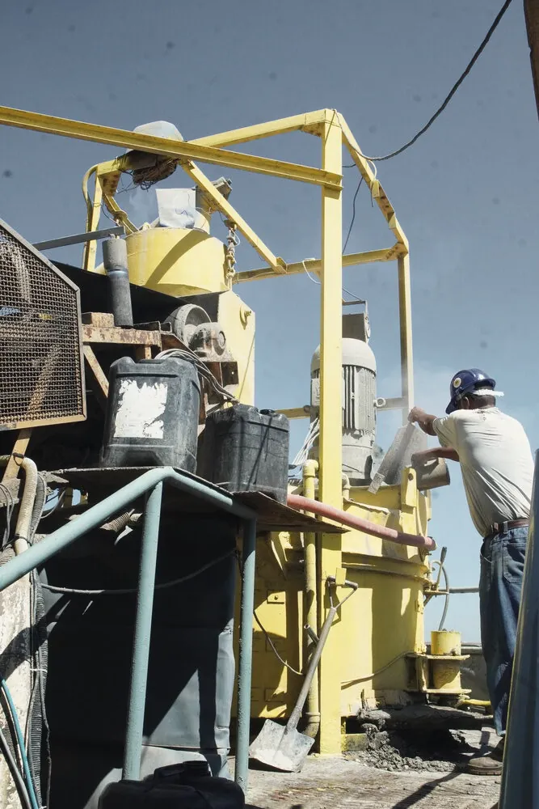
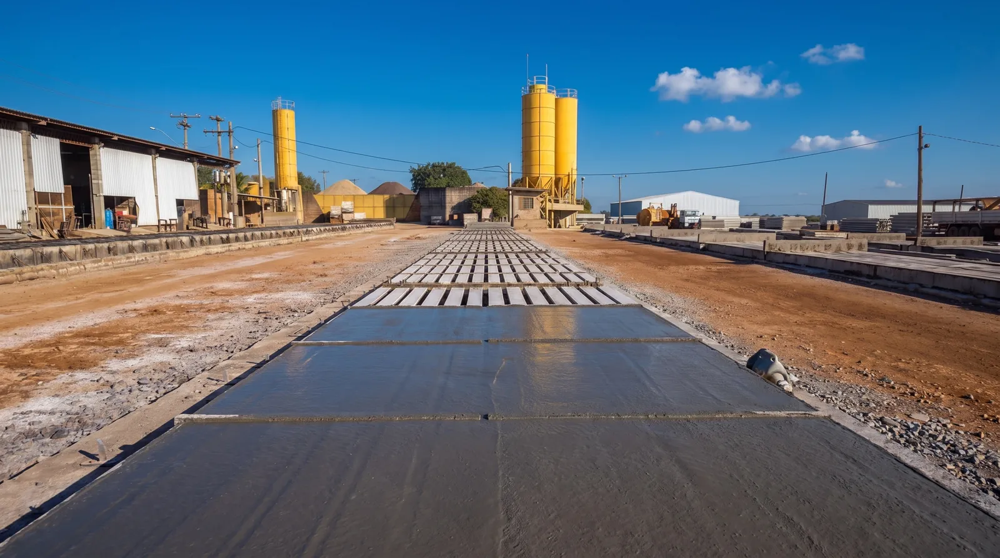
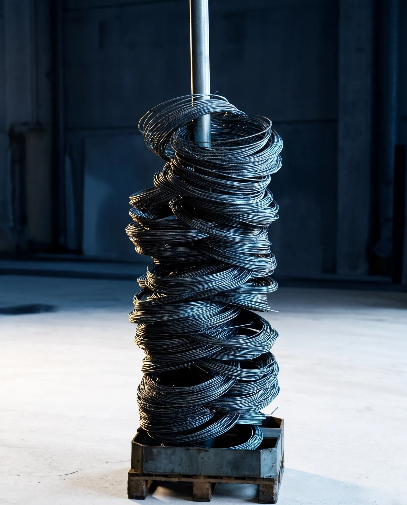

O núcleo da operação.
Antes da forma vem a matéria. Na central própria da IPR, cimento, areia e brita são pesados, misturados e registrados para que cada estaca receba o mesmo concreto.

Insumos selecionados, material de performance.
A central converte insumos selecionados num concreto C40 previsível, lote após lote.
É ela que garante o cumprimento dos requisitos normativos e das especificações de projeto, e com isso a confiabilidade estrutural de cada estaca que sai da pista.


Do silo à estaca.
Cada etapa é instrumentada e registrada, sem as variáveis e imprecisões do carregamento manual.
Silos e baias
Cimento em silos e agregados com granulometria controlada.
Pesagem gravimétrica
Balanças calibradas reproduzem o traço de laboratório em cada ciclo.
Massa homogênea
Misturadores industriais distribuem cimento, agregados e aditivos de forma uniforme.
Cada metro cúbico
Da origem dos insumos ao elemento estrutural, a carga fica documentada.
Quatro garantias de processo.
- Precisão digital na dosagemSistemas automatizados e balanças calibradas conforme a NBR 7212 reproduzem o traço com fidelidade.
- HomogeneidadeConsistência controlada e boa trabalhabilidade, sem segregação durante o adensamento na fôrma.
- Controle do fckRelação água/cimento sob controle, o fator que decide a durabilidade e a resistência à compressão projetada.
- RastreabilidadeMonitoramento da carga desde a origem dos insumos até a aplicação na estaca.


Por que a central própria importa para a fundação?
Ao centralizar a produção, a IPR elimina riscos externos e garante um concreto com propriedades físicas e químicas superiores às das misturas de canteiro.
Resultado: fundações com maior vida útil e resistência a agentes agressivos do solo.
A força guardada dentro do concreto.
Na pista de protensão, os fios de aço são tracionados antes do concreto. Quando a peça ganha resistência, os fios são liberados e a força passa para a estaca. É ela que a protege no transporte, no içamento e no golpe do martelo.
Seguir para Estacas